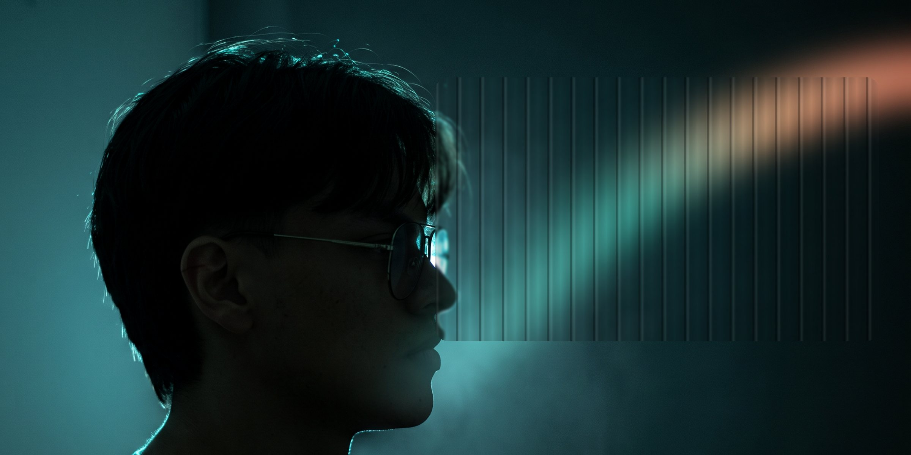

¿Quién soy?
Depende del proyecto.
Capas · toca una
- Edición
- Cámara
- Color
- Motion
- Diseño gráfico
- Editorial
- Web
Editor de video
Ver escenas
Escenas
Un proyecto, un papel distinto
01¿Quién soy? Depende del proyecto. Entra a cada escena: en cada una soy alguien distinto.
Quién soy, en corto
Grabo · edito · cuento
02Más trabajo
Videoclips · reels · impresos
03


Próxima escena